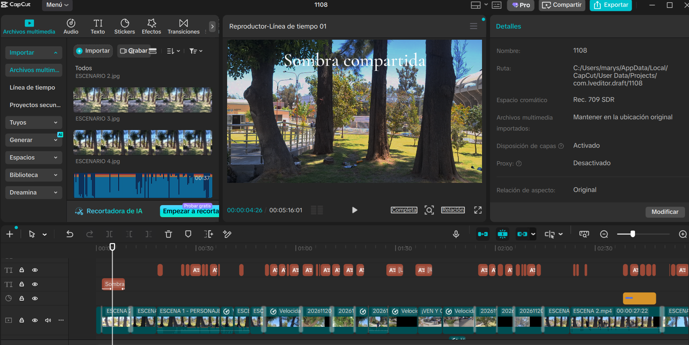

Bitácora · Estrategia de publicación
María Isabel Quispe Sinticala
Entregables
| Entregable | Carpeta | Estado | Enlace o archivo |
|---|---|---|---|
| Video con voces en off y subtítulos | 02_Obra y 04_Accesibilidad | Listo | Ver en YouTube |
| Extensión interactiva (Twine) | 02_Obra | Listo | https://mquispesin-456.github.io/SombraCompartida/historia.html |
| Biblia narrativa | 01_Planificacion | Listo | https://drive.google.com/drive/folders/1O6a4XBa-bJwUb1EyDFZwhH9MfJ2SLoih?usp=sharing |
| Storyboard con imágenes | 01_Planificacion | Listo | https://drive.google.com/drive/folders/1O6a4XBa-bJwUb1EyDFZwhH9MfJ2SLoih?usp=sharing |
| Transcripción del video | 04_Accesibilidad | Listo | https://drive.google.com/drive/folders/1YwN0jMiRmB7AKvH6nM7u2YHi5lqm5KOb?usp=sharing |
Módulo para demostrar
La edición del video: el montaje de las voces en off y los subtítulos, y cómo se integra en la página. También la extensión interactiva hecha en Twine y su enlace con la landing.
Detalle de cada entregable
Video editado, con voces en off y subtítulos
Edité el video a partir de las tomas y las voces en off ya grabadas: monté las voces de los tres árboles sobre las imágenes y armé los subtítulos en español de las 6 tomas. El video, de unos 5 minutos, está en YouTube como oculto, con los subtítulos activables desde el reproductor, y se muestra dentro de la landing. El archivo original está en la carpeta compartida de Drive.

Extensión interactiva (Twine)
Armé la extensión interactiva en Twine y la vinculé a la página, de modo que se abre desde la landing.
Biblia narrativa
Redacté la biblia narrativa a partir del guion técnico: problema, audiencia, evidencia, propósito, promesa, tema, voces, logline, sinopsis, escaleta y reglas del mundo. Después la amplié con la información del equipo y apliqué las correcciones.
Storyboard con imágenes
Armé un storyboard de 15 cuadros, con el plano, además de un bloque de estilo y fichas de los personajes para mantener la coherencia visual.
Transcripción del video
Armé la transcripción de las 6 tomas, con quién habla en cada línea y descripciones de lo visual y lo sonoro entre corchetes. Sirve como alternativa en texto al video, junto con los subtítulos.
Registro de actividades
Lo que hice, con fecha y resultado.
-
Edité el video: monté las voces en off de los tres árboles sobre las imágenes ya grabadas.
Resultado: video final con voces, de unos 5 minutos.
-
Armé los subtítulos en español del video y los subí a YouTube.
Resultado: subtítulos activos en el video, con el botón CC.
-
Subí el video a YouTube como oculto y lo integré en la landing. Como el original pesaba 366 MB, no cabía en GitHub.
Resultado: el video se reproduce dentro de la página publicada.
-
Subí el video a la carpeta compartida de Drive.
Resultado: el video queda disponible como archivo fuente.
-
Armé la extensión interactiva en Twine y la vinculé a la página.
Resultado: la interactiva se abre desde la landing.
-
Redacté la biblia narrativa a partir del guion técnico, la amplié con la información del equipo y apliqué las correcciones.
Resultado: biblia narrativa lista para la carpeta de planificación.
-
Armé el storyboard de 15 cuadros con prompts de imagen para cada escena.
Resultado: storyboard listo, con bloque de estilo y fichas de personajes.
-
Armé la transcripción de las 6 tomas del video.
Resultado: alternativa en texto del video, con quién habla en cada línea.